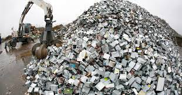
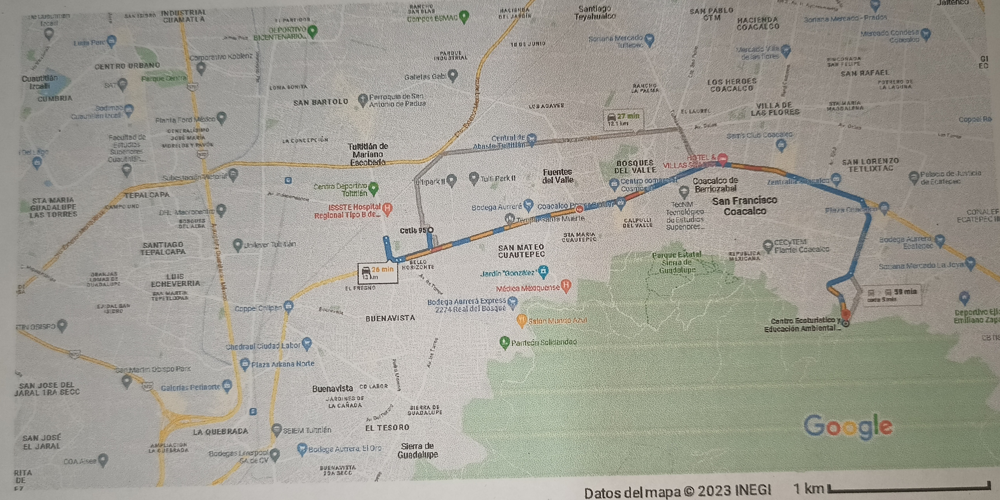

Indice
-
Inicio
- Concepto
- Importancia
- Desechos Electronicos
- Por que es importante desecharlos
- Donde puedo desecharlos
- Indicaciones para desecharlos
- Mapas de donde los puedes desechar
- Soluciones creativas
- Algunos ejemplos de obras creativas con desechos
- lugares que puedas visitar para ver ideas creativas
- Final de pagina
- Redes sociales
- Parte complemetnaria de la materia de ecologia
|
|
|
|

Importacia de ser tirados los desechos electronicos
La importancia de reciclar los Residuos de
Aparatos Eléctricos y Electrónicos (RAEE) es
capital porque su capacidad de contaminación
es muy elevada debido a los metales pesados
que incluyen

Este es un lugar al cual puedes ir a tirar tus desechos electronicos guiandote desde la escuela del cetis 95
Donde puedo desecharlos
Este es un lugar al cual puedes ir a tirar tus desechos electronicos guiandote desde la escuela del cetis 95
Donde puedo desecharlos
Algunas indicaciones para tirar los desechos en el lugar de centro de reciclaje nokia
Así, es, dentro de la tienda Nokia, podrás dejar tus teléfonos
celulares y accesorios de cualquier marca, así como algunos
otros productos de desperdicio elec trónico que esta empresa se
encargará de manipular y reciclar como es debido.
Una de las maneras es ir al lugar
y otorgar tu aparato electronico
y la mejor manera de encontrar el lugar es buscando en google maps el lugar conocido como eco reciclaje o marcando al numero 5533527185 y alli preguntar para mas informacion